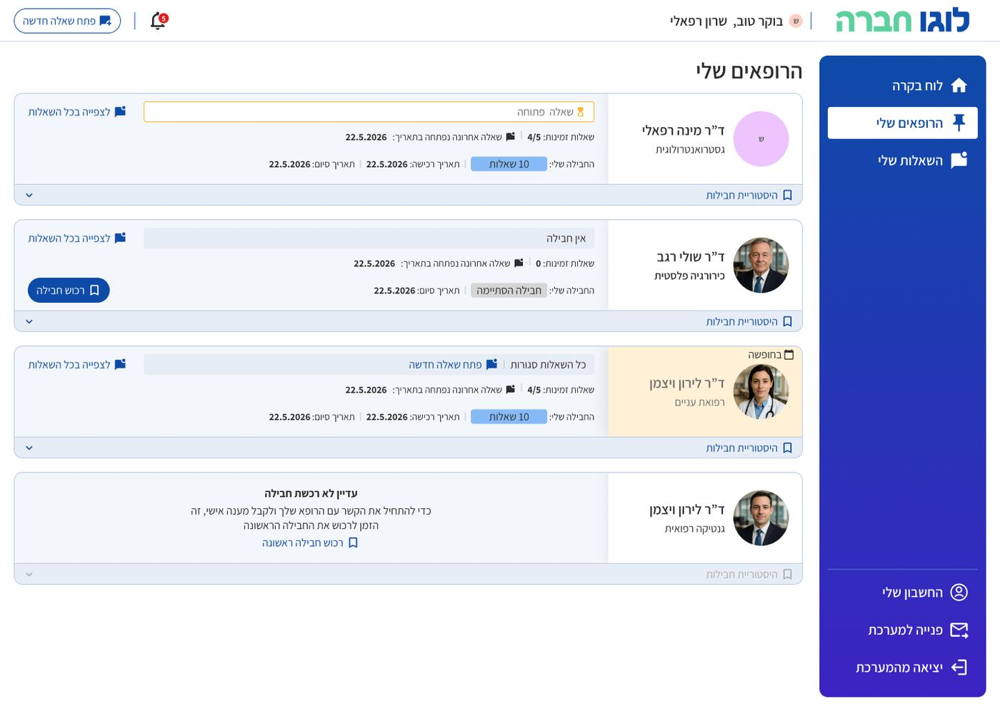

Three users, three different needs
[What the platform does and who it serves.]
From specification to a shared design system
I owned the platform end to end: product specification, UX and UI for three user types, a new visual language, and a unified design system.
- Patients[Their main flow and need.]
- Doctors[Their main flow and need.]
- Admins[Their main flow and need.]
One language for three products
[How the design system kept three experiences consistent.]

[What changed]
[Outcome, launch, feedback.]